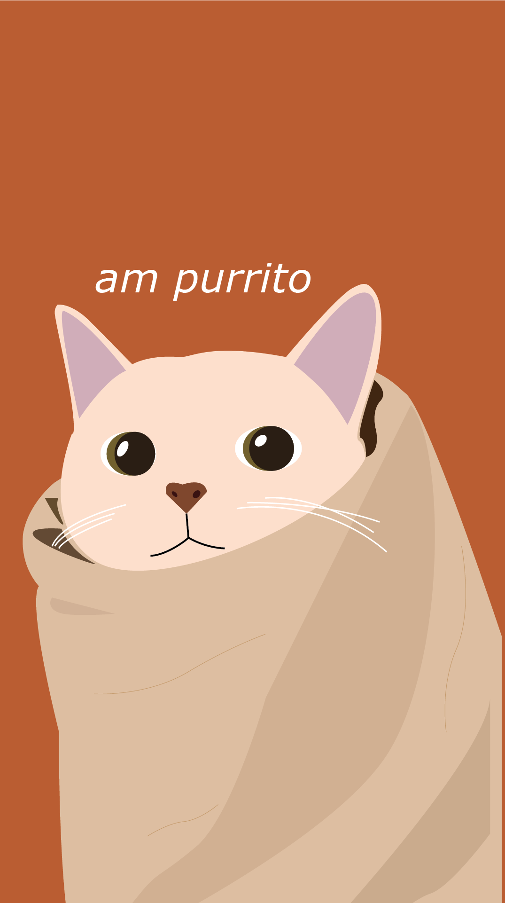
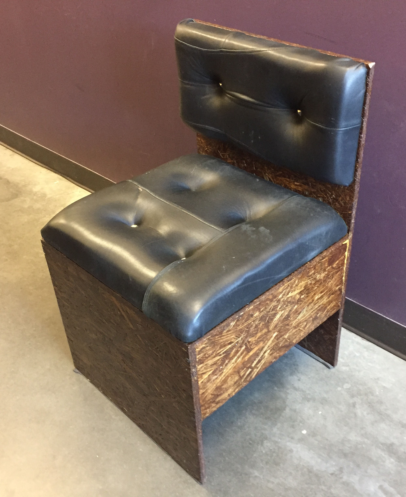

Personal Projects
Things I make when I'm bored.
Things I make when I'm bored.
Inspired by a meme, this piece captures the comfort and confusion of a cat bundled in sheets, taking on the likeness of a burrito. The cat does not know what a burrito is, but evokes joy nonetheless.

The capstone class to my industrial design minor was a furniture design class. Each student and designed and built a chair according to an inspiration they chose. I chose punk rock, and had fun with it.
The poster for the design development phase:

A rendering of the final design, created in Fusion360:

The built chair, complete with cushions made from leather jackets and studs:

I designed a sticker to promote the hit podcast, No Easy Answers, Butt. Can you tell I dig the font?

I also wrote and recorded the theme song.
My musical project. More tunes to come!
For better or for worse, I designed and coded this website.